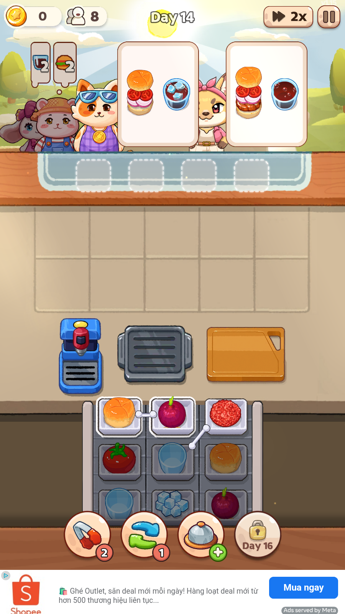
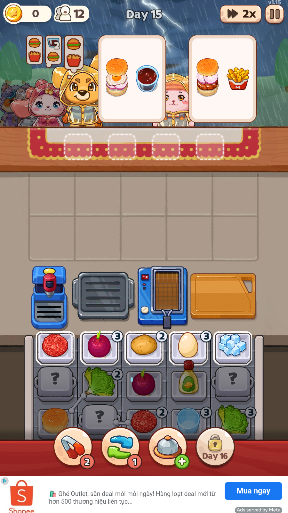

Băng chuyền nguyên liệu (ConveyorGrid)
Mô tả
- Hàng đợi nguyên liệu của mọi level là một băng chuyền 3–5 cột: người chơi chỉ chạm được hàng trên cùng, lấy xong thì cột dồn lên 1 hàng (không bù từ cột khác).
- Mỗi ô chứa 1–4 bản sao một nguyên liệu; một chạm lấy cả ô và bay tới trạm / lưới chuẩn bị 5×2. Các cơ chế khác (ẩn, đóng băng, chuỗi, bó, khoá chìa) đều là trạng thái của ô trên băng chuyền này.
- Dữ liệu APK: 1030 level chơi được, 78134 ô (≈ 76 ô / level), cột sâu tới 43 hàng; 4 cột (474 level) và 5 cột (461) phổ biến hơn 3 cột (95).
- Bản 1.15 có 18 lớp
Conveyor*; so với 1.11 mới cóConveyorBlockedColumnHint(nháy gợi ý cột bị chặn) vàConveyorItemShape(khối nhiều ô), cùng cơ chế rã băng theo tập cột và nhả món tuần tự.
Thiết kế chi tiết
Tóm tắt thiết kế
- Code Chỉ hàng 0 chạm được và không bù ô từ cột khác (
ConveyorSlot.IsPickable,ConveyorGrid.Advance): mọi chướng ngại của game đều là trạng thái của ô trên băng chuyền này. - Code Chạm bị từ chối khi thiếu chỗ (
HasRoomFor): băng chuyền và lưới 5×2 là một hệ thống chung về áp lực chỗ chứa. - Code Có lớp phát hiện kẹt riêng (
ConveyorStuckAlert0,4 s +ConveyorLockoutCheck) và gợi ý nước đi duy nhất sau 3 s: thiết kế để người chơi không bị kẹt âm thầm. - APK Trung bình ≈ 76 ô / level, 4–5 cột chiếm 90% level; chỉ có ô nguyên liệu (0 ô Sweeper / Empty).
- Playtest Day 13 có 4 cột, Day 14 3 cột, Day 15 5 cột sâu (Super Hard); Stack Box (booster mới Day 16) gom 5 đĩa lưới thành 1 hộp.
- Nhận định Chuyển hàng đợi sang băng chuyền thiết kế sẵn (thay vì sinh ngẫu nhiên) cho phép cân độ khó từng level bằng dữ liệu và kiểm bằng bot.
Luồng người chơi từng bước
- Mở mànHệ thống CodeCác hàng đổ xuống cách nhau 0,3 s; ô sâu hơn hiện mờ.

Day 14: băng chuyền 3 cột (hẹp hơn Day 13 có 4 cột); chỉ hàng đầu sáng, chạm được - Chạm hàng 0Người chơi CodeChạm ô sáng; nếu đủ chỗ, cả ô bay đi.
- Cột dồn lênHệ thống Code
Advancekéo ô phía sau; ô ẩn lộ nếu lên hàng 0.
Day 15 (Super Hard): băng chuyền 5 cột sâu nhiều hàng, có ô "?" và dây nối linked - Kẹt / cảnh báoHệ thống Code
ConveyorStuckAlertkiểm tra 0,4 s: nháy ô khoá hoặc hiện "Out of Slot".


Lớp Conveyor* trong 1.15
| Lớp | Vai trò | Ghi chú |
|---|---|---|
| ConveyorGrid | Lưới ô, dồn cột, xoay hàng (Swap Row), rã băng | AreAdjacent: hai cột kề khi lệch < 1,5 bước cột |
| ConveyorColumn / ConveyorSlot | Cột và ô (Col, Row, Width, Height, Chain) | |
| ConveyorBundle (+Piece) / ConveyorBundleBuilder | Dữ liệu ô và bộ sinh ngẫu nhiên | Piece (ô con của khối): xem DuplicateFood |
| ConveyorChain / ConveyorChainRopeView | Chuỗi Linked và dây nối | |
| ConveyorPickup / ConveyorTapState | Xử lý chạm, batch, Tongs | CanCommitPick, IsPickAnyCandidate, WhyNotPickAny mới 1.15 (DIFF_111_115); TapRelease đổi chữ ký |
| ConveyorStuckAlert / ConveyorLockoutCheck | Phát hiện kẹt | |
| ConveyorBlockedColumnHint | Gợi ý cột bị chặn | mới 1.15 |
| ConveyorItemShape | Khung khối nhiều ô | mới 1.15 |
| ConveyorFreeze / ConveyorCleanerItem / ConveyorOutOfStockItem / ConveyorQueueMask / ConveyorIngredientSource | Đóng băng, vật dọn, ô hết hàng, mặt nạ, nguồn bundle |
Nguồn: _analysis/code/decompiled/index.tsv, Docs/DIFF_111_115.md.
Số level theo số cột (APK)
| Số cột | Số level |
|---|---|
| 3 | 95 |
| 4 | 474 |
| 5 | 461 |
Server live 16/11: Docs/LEVEL_DATA.md (cột 3–5 ở mọi map).
Vận dụng cho game khác
- Đưa mọi chướng ngại vào một cấu trúc dữ liệu duy nhất (ô trên băng chuyền + trạng thái) giúp thêm chướng ngại mới chỉ bằng một cờ trạng thái.
- Luôn có bộ phát hiện kẹt và gợi ý nước đi cho game ghép luật: chi phí thấp, giảm bỏ chơi.
Bảng tổng hợp mọi tính năng đã làm chi tiết: FoodiePop_ThietKeChiTiet.xlsx.
Mở khóa & điểm vào
Có từ level 1: cả 11 scene map đều có IngredientSpawnerController + ConveyorGrid (Docs/LEVEL_DATA.md). Booster Tongs mở Day 3, Swap Row Day 9, Auto Cook Day 12, Stack Box Day 16 (RC booster_config, mặc định client).
Điểm vào:
- Màn chơi: băng chuyền nguyên liệu dưới quầy, trên thanh booster
- Chạm ô hàng 0 →
ConveyorPickup.TryTap - Booster Tongs (
BeginPickAnyIngredient), Swap Row (PromoteRowToFront)
Cách hoạt động
- Level tải:
StackModeService.ResolveQueuesvàBuildCellsFromQueuebiến hàng đợi thiết kế thành mảngConveyorBundletheo cột;ApplySlotGroupsgộp nhóm Combined (bó) và nối nhóm Linked (chuỗi). IngredientSpawnerController.BuildColumnstạoConveyorColumn;ConveyorGrid.SetColumnsđặt cột,ConveyorGrid.Tickchạy mỗi khung. Lúc mở màn các hàng đổ xuống cách nhauinitialSpawnInterval= 0,3 s.- Mỗi cột có
ConveyorSlot(Col, Row, Width, Height, Chain); chỉConveyorSlot.IsPickablekhiRow == 0(và chuỗi sẵn sàng nếu thuộcConveyorChain). - Chạm:
ConveyorPickup.TryTap→Allows(không bận, không khoá tương tác, không bị khoá cảnh báo) →CanCommitPick/HasRoomFor(đủ chỗ trạm và lưới) →TapRelease. CollectBatchgom cả bó / chuỗi thành batch; mỗi bản sao bay tới trạm,ConveyorPickup.SpawnOnetạoDragItemtrên kệ (chờ tối đaShelfSettleTimeout2,5 s).IngredientSpawnerController.OnItemPicked: phát sfx, rã băng cột kề (xem FrozenSlot), tạo chìa nếu ô mang chìa; cột dồn lên (ConveyorGrid.Advance);RevealIfSettledAtFrontlộ ô ẩn.- Mỗi 0,4 s
ConveyorStuckAlert.Tickphân loại kẹt (OutOfSlothết chỗ,OutOfMovehết nước đi) bằngConveyorLockoutCheck; sau 3 s không thao tác hiện gợi ý nước đi duy nhất (FindOnlyMove). ConveyorBlockedColumnHint.Tickmỗi 0,2 s nháy biểu tượng ở cột bị chặn (Nhận định: cột không dồn lên được vì ô chặn).
Ảnh chụp
Bấm ảnh để phóng to, dùng phím ← → để chuyển ảnh. Nhãn màu cho biết nguồn bằng chứng của ảnh.

Số liệu chính
| Chỉ số | Giá trị | Nguồn |
|---|---|---|
| Số cột / level (APK) | 3: 95, 4: 474, 5: 461 | Data/levels/* |
| Số ô / level (APK) | ≈ 76 (tổng 78134) | Data/levels/* |
| Hàng sâu nhất một cột (APK) | 43 | Data/levels/* |
| Số bản sao / ô | 1–4 (đa số 1) | Data/levels/* |
| Khối lớn nhất | 3×3 (maxBlockSize); dữ liệu chỉ dùng tới 3 ô | FS*.unity |
| Số lớp Conveyor* | 18 trong Assembly-CSharp | _analysis/code/decompiled/index.tsv |
Use case (12)
Bấm vào từng use case để mở. Mở/đóng tất cả
UC-01 Dựng băng chuyền khi tải level
Các bướcResolveQueues→BuildCellsFromQueueApplySlotGroupsgộp / nốiBuildColumns+SetColumns
| Actor | System |
|---|---|
| Trigger | Level tải xong |
| Điều kiện | Level tải |
| Kết quả | Băng chuyền 3–5 cột đổ xuống |
| Quy tắc / số liệu | Cột: 3 cột 95 level, 4 cột 474, 5 cột 461 (APK); bước đổ mở màn 0,3 s |
| Evidence | StackModeService.BuildCellsFromQueue |
UC-02 Chạm ô hàng trên cùng
Các bướcTryTap→Allows→HasRoomForTapReleasenhả bản sao- Cột dồn lên
| Actor | Player |
|---|---|
| Trigger | Người chơi chạm ô |
| Điều kiện | Ô ở hàng 0 |
| Kết quả | Nguyên liệu bay tới trạm / lưới (bản 1.11 còn ghi nhận haptic nhẹ mỗi chạm hợp lệ) |
| Quy tắc / số liệu | Chỉ hàng 0 chạm được; mỗi ô 1–4 bản sao (1: 55 350, 2: 18 602, 3: 4 131, 4: 51 ô) |
| Evidence | ConveyorPickup.TryTap |
UC-03 Chạm bị từ chối
Các bướcAllowshoặcHasRoomForfalseIngredientConveyorItem.PlayRejectBumprung ô- Lưới nháy viền đỏ nếu đầy
| Actor | Player |
|---|---|
| Trigger | Không đủ chỗ / ô khoá / bận |
| Điều kiện | Ô bị khoá hoặc lưới đầy |
| Kết quả | Không lấy; không mất gì |
| Quy tắc / số liệu | Các lý do từ chối: busy, tutorial, belt locked by alert, frozen, no cell, no home (chuỗi trong WhyNotPickAny) |
| Evidence | ConveyorPickup.WhyNotPickAny |
UC-04 Cột dồn lên, không bù cột khác
Các bướcConveyorGrid.Advance- Ô phía sau trượt lên 1 hàng
| Actor | Player |
|---|---|
| Trigger | Sau khi lấy ô |
| Điều kiện | Cột còn ô |
| Kết quả | Cột ngắn lại; cột rỗng hiển thị ConveyorOutOfStockItem |
| Quy tắc / số liệu | Không chuyển ô giữa cột (1.11 xác nhận 274/274) |
| Evidence | ConveyorGrid.Advance |
UC-05 Booster Tongs (chọn bất kỳ)
Các bướcIngredientSpawnerController.BeginPickAnyIngredient- Camera hạ 3 đơn vị trong 0,35 s để thấy sâu
IsPickAnyCandidatelọc ô trongpickAnyRows(7 hàng) và không bị khoá
| Actor | Player |
|---|---|
| Trigger | Bấm Tongs |
| Điều kiện | Có Tongs |
| Kết quả | Chọn 1 ô bất kỳ trong 7 hàng đầu |
| Quy tắc / số liệu | RC booster_ingredient_pick;1;3;0;600;99;visibleRows;7; Tongs không rã băng ô kề (OnItemPicked thoát sớm) |
| Evidence | IngredientSpawnerController.BeginPickAnyIngredient |
UC-06 Booster Swap Row
Các bướcIngredientSpawnerController.PromoteRowToFrontConveyorGrid.PromoteRowToFrontxoay các hàng đầu; hàng đang trượt (PromoteShift)
| Actor | Player |
|---|---|
| Trigger | Bấm Swap Row |
| Điều kiện | Có Swap Row |
| Kết quả | Hàng thứ 2 / 3 lên hàng đầu |
| Quy tắc / số liệu | Mô tả 1.11: [r0,r1,r2] → [r1,r2,r0]; 1.15 giữ cùng tên method, chưa đọc lại thân hàm |
| Evidence | ConveyorGrid.PromoteRowToFront |
UC-07 Phát hiện kẹt và cảnh báo
Các bướcConveyorStuckAlert.Classify→ VerdictConveyorLockoutCheck.Collecttìm ô khoá- Nháy ô khoá 1 lần / giây
| Actor | Player |
|---|---|
| Trigger | Hết chỗ hoặc hết nước đi |
| Điều kiện | Không còn nước đi |
| Kết quả | Cảnh báo "Out of Slot" / mở save-me |
| Quy tắc / số liệu | Chu kỳ kiểm tra 0,4 s; gợi ý nước duy nhất sau 3 s |
| Evidence | ConveyorStuckAlert.Classify |
UC-08 Gợi ý cột bị chặn (mới 1.15)
Các bướcConveyorBlockedColumnHint.CollectdùngConveyorGrid.CanRefill- Vẽ biểu tượng nháy (alpha 0 – 0,75, 0,5 lần / giây)
| Actor | Player |
|---|---|
| Trigger | Cột không dồn lên / nhận thêm được |
| Điều kiện | Có cột bị chặn |
| Kết quả | Người chơi thấy cột nào đang kẹt |
| Quy tắc / số liệu | Kiểm tra mỗi 0,2 s, nhìn 3 hàng (ViewRows) |
| Evidence | ConveyorBlockedColumnHint.Tick |
UC-09 Khối nhiều ô (mới 1.15)
Các bướcIngredientConveyorItem.ApplyShape(width, height, cellStep)ConveyorItemShape.Applykéo khungSizedPrefab/HeightPrefabchọn prefab
| Actor | Player |
|---|---|
| Trigger | Bundle Width/Height > 1 |
| Điều kiện | Level có Combined |
| Kết quả | Bó hiển thị như một vật lớn tới 3×3 |
| Quy tắc / số liệu | maxBlockSize = (3, 3) ở 11 map |
| Evidence | ConveyorItemShape.Apply |
UC-10 Rã băng theo tập cột
Các bướcOnItemPicked→CollectThawColumnsTryThawOneTurncho ô đầu cột kề
| Actor | Player |
|---|---|
| Trigger | Lấy ô kề ô băng |
| Điều kiện | Có ô băng |
| Kết quả | Số lượt băng giảm 1 |
| Quy tắc / số liệu | Khác 1.11 (ThawFrontAt bị xoá) |
| Evidence | IngredientSpawnerController.CollectThawColumns |
UC-11 Ô cleaner và ô hết hàng
Các bước- id -2 → Empty (
ConveyorOutOfStockItem), id âm khác → Sweeper (ConveyorCleanerItem)
| Actor | Player |
|---|---|
| Trigger | Id âm trong hàng đợi |
| Điều kiện | Level có id âm |
| Kết quả | Chỗ trống hoặc vật dọn đĩa bẩn |
| Quy tắc / số liệu | APK: 0 ô Sweeper / Empty trong 1 030 level (toàn bộ 78 134 ô là nguyên liệu) |
| Evidence | ConveyorCleanerItem.CanRelease |
UC-12 Sinh hàng đợi ngẫu nhiên
Các bướcConveyorBundleBuilder.BuildColumnvớirandomQueueColumns(3, 5),minBundleSize1,maxBundleSize2,crossChance0,2,chainChance0,freezeChance0
| Actor | Player |
|---|---|
| Trigger | Hàng đợi do builder sinh |
| Điều kiện | Không có hàng đợi thiết kế |
| Kết quả | Hàng đợi ngẫu nhiên (không thấy dùng cho level thường) |
| Quy tắc / số liệu | Cấu hình giống nhau ở 11 map |
| Evidence | ConveyorBundleBuilder.BuildColumn |
Cấu hình (12)
Gộp mọi nguồn: const trong code, giá trị mặc định trong APK, storage key, AB test, cờ server.
| Nguồn | Key | Kiểu | Giá trị | Ý nghĩa | Nơi định nghĩa |
|---|---|---|---|---|---|
| asset | rows / columnWidth / itemWidth / padding / speed (scene) | int / float | rows 8, columnWidth 1,11, columnSpacing 0, itemWidth 0,8, padding 0,15, speed 5, edgePadding 0,1 (FSBurger) | kích thước lưới băng chuyền | FSBurger.unity (IngredientSpawnerController) |
| asset | initialSpawnInterval / releaseStepInterval (scene) | float | 0,3 s / 0,1 s | nhịp đổ khi mở màn / nhịp nhả từng món | FSBurger.unity |
| asset | maxBlockSize (scene) | Vector2Int | (3, 3) ở 11 map | khối lớn nhất | FS*.unity |
| asset | randomQueueColumns / minBundleSize / maxBundleSize / crossChance / chainChance / chainSize / freezeChance / freezeTurns (scene) | mixed | (3,5) / 1 / 2 / 0,2 / 0 / (2,2) / 0 / 3 ở 11 map | tham số sinh hàng đợi ngẫu nhiên (ConveyorBundleBuilder.Settings) | FS*.unity |
| asset | visibleRows (scene) | int | 0 (11 map) | khung nhìn hàng đợi (0 = không giới hạn bằng mặt nạ) | FS*.unity |
| asset | pickAnyCameraDrop / pickAnyCameraDuration (scene) | float | 3 / 0,35 s | camera hạ khi dùng Tongs | FSBurger.unity |
| code const | ConveyorPickup.ShelfSettleTimeout | float | 2,5 s | chờ kệ ổn định sau khi nhả | AnhPD.FoodOrder.ConveyorPickup |
| code const | ConveyorStuckAlert CheckInterval / LockoutBlinksPerSecond / LastMoveHintDelay | float | 0,4 s / 1 / 3 s | chu kỳ kiểm tra kẹt, tốc độ nháy ô khoá, độ trễ gợi ý nước duy nhất | AnhPD.FoodOrder.ConveyorStuckAlert |
| code const | ConveyorBlockedColumnHint CheckInterval / BlinksPerSecond / MinAlpha / MaxAlpha / ViewRows | float / int | 0,2 s / 0,5 / 0 / 0,75 / 3 | gợi ý cột bị chặn (mới 1.15) | AnhPD.FoodOrder.ConveyorBlockedColumnHint |
| stub | ConveyorBundle fields | class | Items, Status, Kind, Width, Height, ChainId, ChainSize, StatusParam, Hidden, KeyColor, DataRow | dữ liệu một ô trên băng chuyền | AnhPD.FoodOrder.ConveyorBundle |
| Data/levels | Phân bố số cột / amount (APK) | int | cột: 3→95, 4→474, 5→461; amount: 1→55350, 2→18602, 3→4131, 4→51 | 1030 level, 78134 ô | Data/levels/* |
| json default (frc_defaults_115) | booster_config (RC) | string | ingredient_pick;1;3;0;600;99;visibleRows;7 | shift_up_row;1;9;0;500;99 | auto_cook;1;12;0;600;99;num;1 | stack_box;1;16;0;700;99;num;5 | clean_dirty;0;6;0;500;99;num;-1 | refill_wait_time;0;-1;0;0;99 | booster liên quan băng chuyền (Tongs, Swap Row, Auto Cook, Stack Box) | RC booster_config |
Backend / server
| Command | Chiều | Mục đích |
|---|---|---|
Remote Config map_config_<map>_lv_<n> / map_config_<map>_lv_all_override_default | server→client | Chuỗi level (khách ~ lưới ~ hàng đợi) mang token của cơ chế này; server live 16/11 ghi đè 1 090 level (xem Docs/LEVEL_DATA.md). Không có API riêng cho cơ chế. |
Giao diện (UI)
| Element | Class | Mục đích |
|---|---|---|
| Băng chuyền nguyên liệu (cột, hàng, ô) | AnhPD.FoodOrder.IngredientSpawnerController | dựng cột, cuộn nền, xử lý chạm |
| Ô nguyên liệu trên băng chuyền | AnhPD.FoodOrder.IngredientConveyorItem | vẽ ô, badge số lượng, rung, nhảy |
| Dây nối chuỗi | AnhPD.FoodOrder.ConveyorChainRopeView | dây giữa các ô Linked |
| Gợi ý cột bị chặn | AnhPD.FoodOrder.ConveyorBlockedColumnHint | biểu tượng nháy (mới 1.15) |
| Mặt nạ khung nhìn | AnhPD.FoodOrder.ConveyorQueueMask | cắt phần băng chuyền ngoài khung |
Còn thiếu / chưa xác minh
- Cơ chế Swap Row 1.15 chưa đọc lại thân hàm (chỉ xác nhận tên method và
PromoteShift). ConveyorBlockedColumnHinthiểu theo tên vàCanRefill, chưa đọc đủ điều kiện hiển thị; chưa thấy trong ảnh Playtest.- Ánh xạ trong Docs/LEVEL_DATA.md "Freeze → ConveyorFreeze" chỉ đúng một phần:
ConveyorFreeze.ApplyFreezeđặt số lượt cho ô băng thiết kế,TryFreezeOnSpawn(đóng băng ngẫu nhiên) có chance = 0. - Không thấy event analytics riêng cho băng chuyền; thông tin lỗi chỉ qua log.
Tính năng liên quan
Ô ẩn (Hidden Item, token #2) Món liên kết (Linked Items, nhóm `$` thứ hai) Ô đóng băng (Frozen Item, token #1:n) Món đôi / bó món (Food Bundle, nhóm `$` thứ nhất) Khoá màu và chìa (Lock & Key, Grid-ColorLock) Lưới nguyên liệu và hàng đợi Booster trong màn Định dạng level, độ khó & thống kê Cứu màn (Save Me)
Nguồn đã đọc
_analysis/code/decompiled/Assembly-CSharp/AnhPD.FoodOrder.ConveyorGrid.c_analysis/code/decompiled/Assembly-CSharp/AnhPD.FoodOrder.ConveyorPickup.c_analysis/code/decompiled/Assembly-CSharp/AnhPD.FoodOrder.IngredientSpawnerController.c_analysis/code/decompiled/Assembly-CSharp/AnhPD.FoodOrder.StackModeService.c_analysis/code/stubs/Assembly-CSharp/AnhPD.FoodOrder.Conveyor*.csDocs/DIFF_111_115.md_rip/ExportedProject/Assets/_Production/Map-burger/Scenes/FSBurger.unityData/remote_config/frc_defaults_115.jsonDocs/LEVEL_DATA.mdData/levels/*_analysis/live/fp_20261116/RESULTS_LIVE.mdF:/0_Phuc/Clone/Pop/Docs/decode/GAMEPLAY.md (H15–H22, gợi ý 1.11)